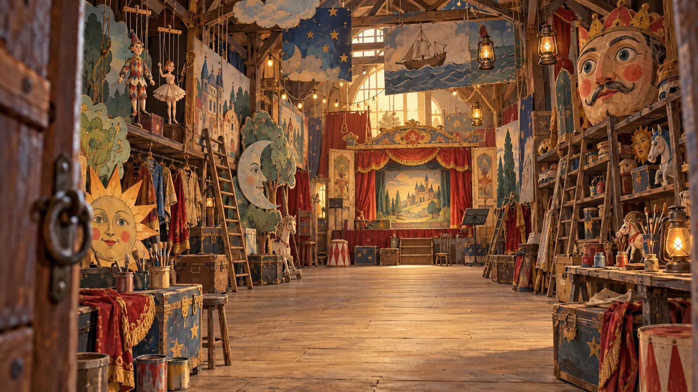

Choisissez une visite avec Poupif ou une ouverture muette.

Ouverture
Je te fais visiter ?
Spectacles, expositions, séjours artistiques, L'Écrin, calendrier ou caravane : où veux-tu aller ?
Dis-le à Poupif avec le micro, ou choisis un écran.
Le dessin n'a pas pu se charger. Rechargez la page pour réessayer.
Avant de suivre Poupif
Sa voix vous accompagne pendant le trajet, puis vous pouvez lui parler et lui demander de projeter les spectacles, les expositions, les séjours artistiques, L'Écrin, le calendrier ou la caravane.
Poupif est une IA, pas un humain. Le micro ne s'ouvre qu'après votre accord et reste actif pendant la conversation. Pour cet essai, le site transmet vos échanges au moteur Poupif sur le Mac via un pont HTTPS Cloudflare. DeepSeek reçoit votre audio pour le transcrire et le texte de la conversation pour préparer la réponse. Le moteur vocal du Mac produit ensuite la voix de Poupif, qui est lue sur votre appareil. Consultez les politiques de Cloudflare et de DeepSeek pour connaître leurs conditions de traitement et de conservation des données.